Super SDMS is a promotional comic project developed for Hewlett‑Packard, focused on cybersecurity and visual storytelling. The intention behind the comic was to use very colorful visuals and minimal text to communicate quickly and effectively with visitors who had little time during a busy business fair.
This fresh, informal and highly visual approach proved extremely successful at the SIMO fair in Madrid, where the comic attracted a large number of visitors thanks to its dynamic style and easy‑to‑digest format.
Due to its positive reception, a second chapter titled “Contra el maligno invisible” was created, this time fully adapted for web distribution. I was responsible for the drawing, composition and artistic direction of the entire project.
Early ideas and character exploration.
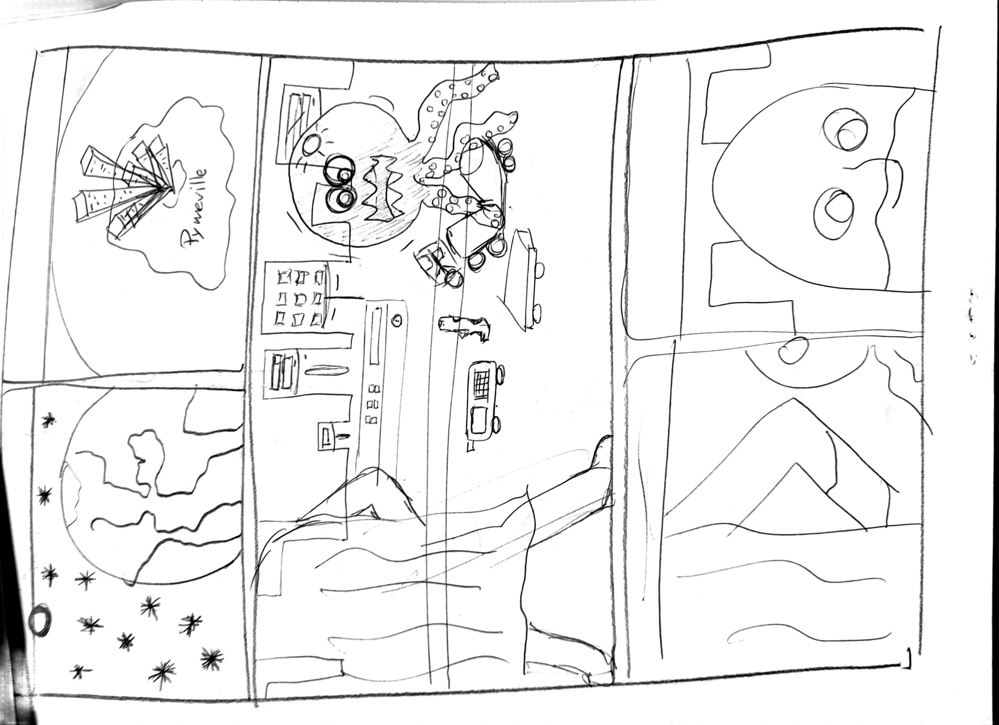
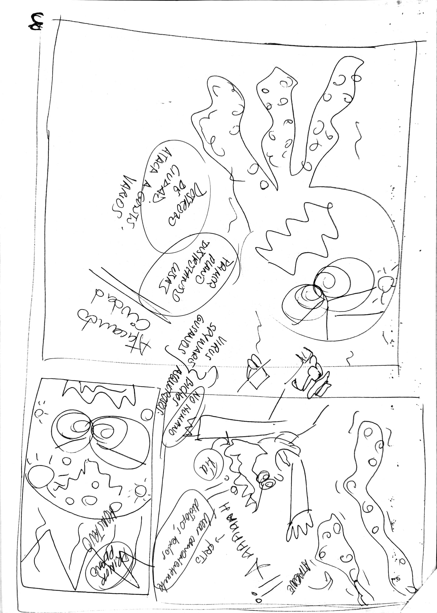
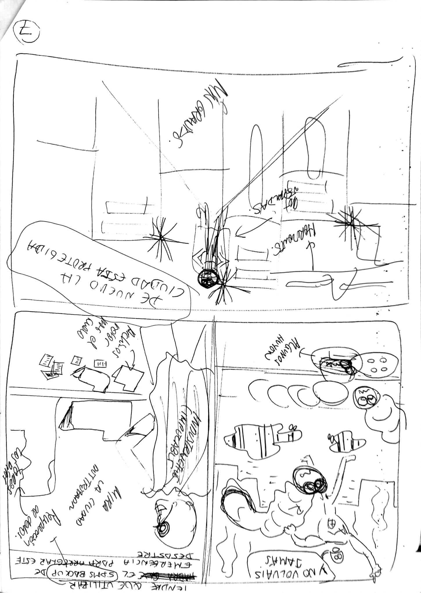
Artistic development and evolution of the comic pages.
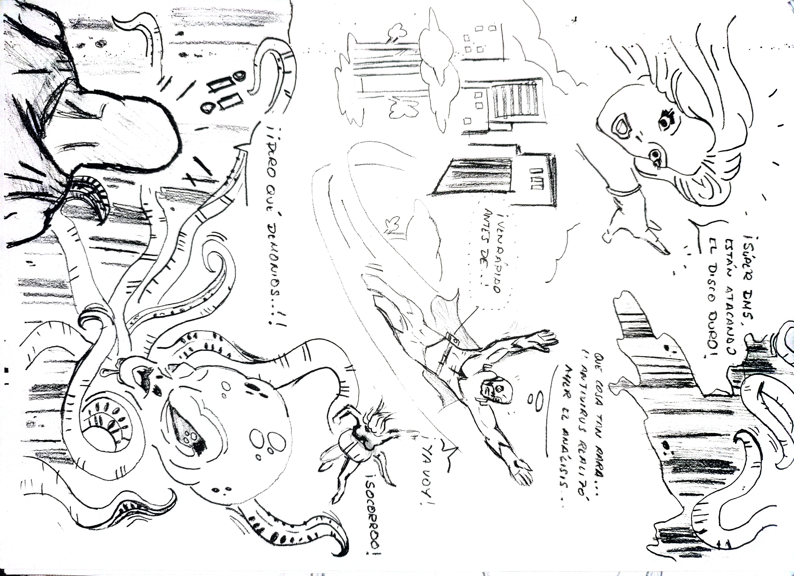
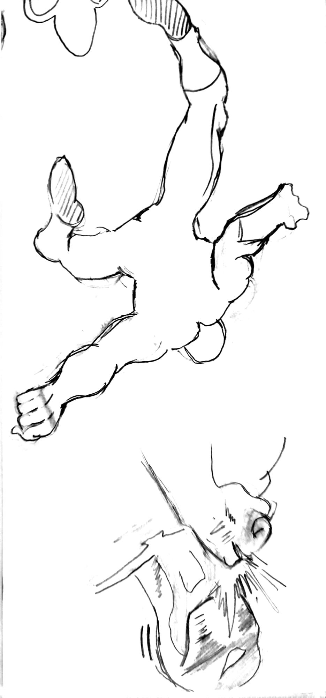
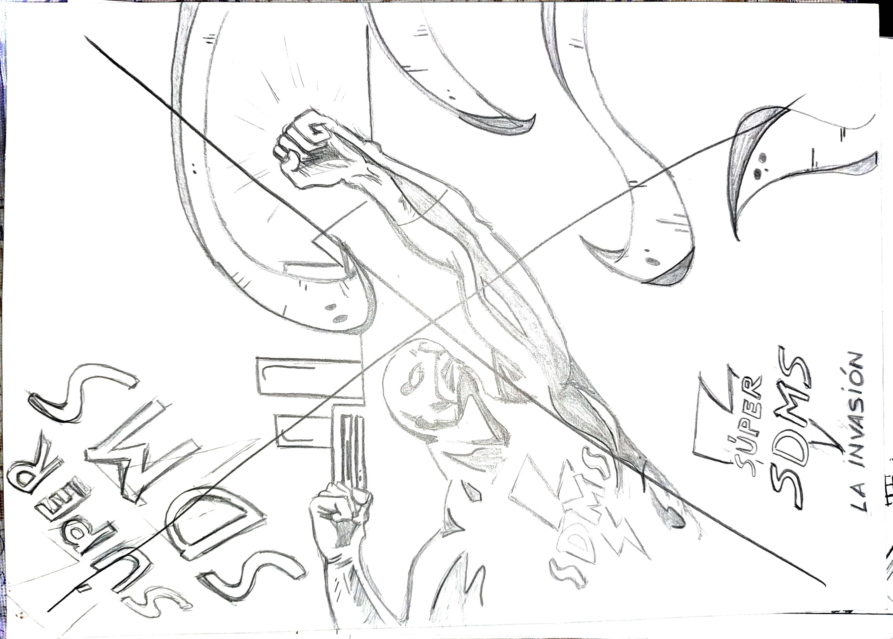
Completed pages ready for print and exhibition.
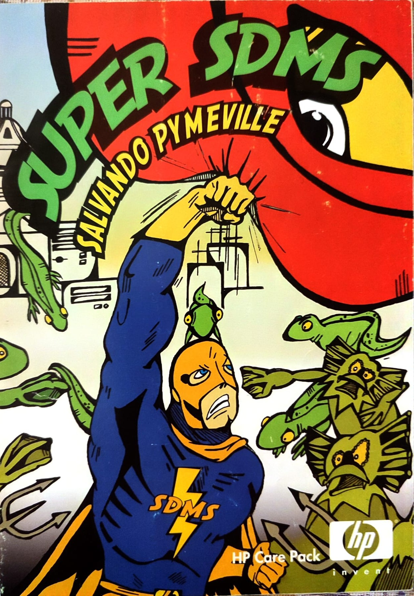

Second part of the project, adapted for digital distribution.
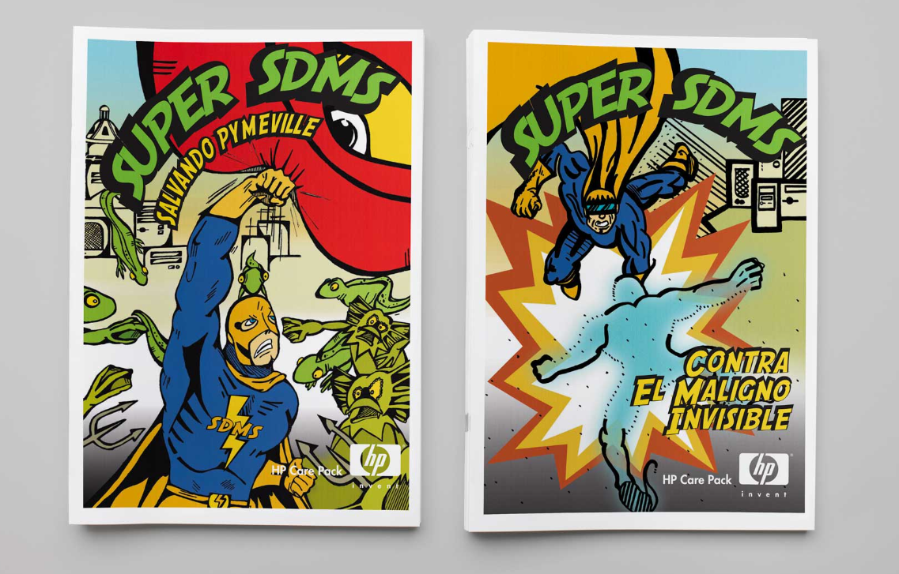
Promotional items created for events and fairs.
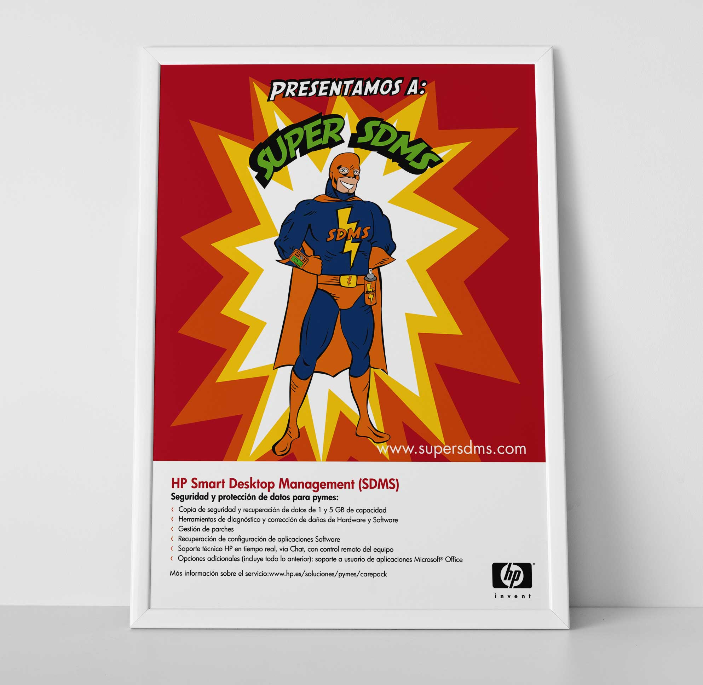
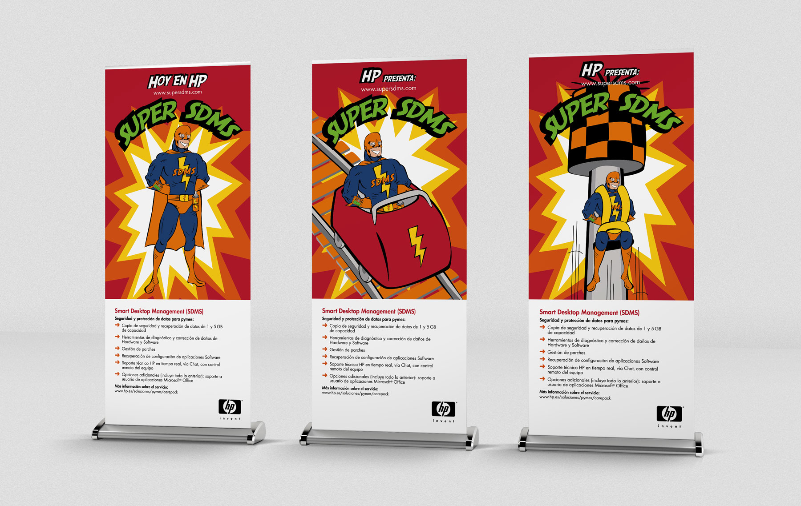
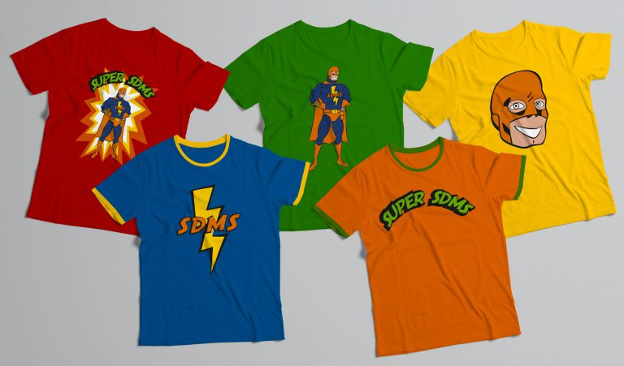
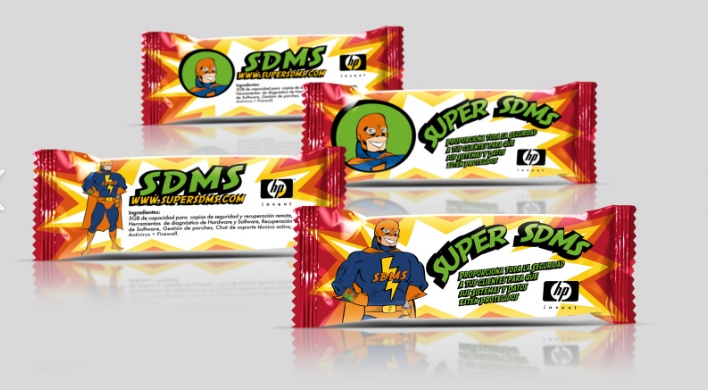